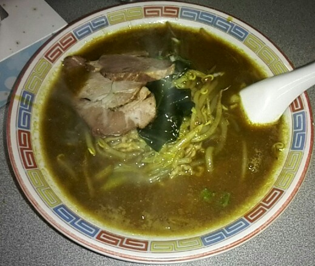

Tantanmen, Tsukemen & Beyond
Beyond the four classic styles, Japanese ramen culture has spawned entire sub-genres with their own devoted followings. These styles often push further in terms of spice, technique, or presentation.

Tantanmen
担々麺
Japanese adaptation of Chinese dan dan noodles. Spicy sesame-based broth (or sauce), ground pork, bok choy, sesame oil. Available with or without broth. Rich, nutty, fiery — a totally different profile from standard ramen.

Tsukemen
つけ麺 · Dipping Ramen
Noodles served cold (or room temp) separately from a thick, concentrated dipping broth. You dip each bite of noodles into the broth before eating. Popularized by Yamagishi Kazuo in Tokyo in the 1960s. Deep, complex broth — usually tonkotsu-shoyu concentrate.

Mazemen / Abura Soba
まぜ麺 · 油そば
Brothless ramen — noodles tossed with a sauce (soy + sesame oil + vinegar + tare) and toppings directly in the bowl. Mix everything together before eating. Higher noodle-to-sauce ratio; intensely flavored, no dilution from broth.

Spicy Miso Ramen
辛味噌ラーメン
Sapporo miso base with added togarashi (chili flakes), doubanjiang (fermented chili bean paste), or house chili oil. Heat builds with each sip. The miso base absorbs chili flavors differently than a clear broth would.

Vegetarian / Vegan Ramen
精進ラーメン
Kombu (kelp) and shiitake-based dashi with soy tare. Toppings: tofu, mushrooms, corn, nori, vegetable chashu. The umami from kombu and dried shiitake can match animal-based broths in depth when done well.

Curry Ramen
カレーラーメン
Japanese curry spices blended into the broth — turmeric, cumin, coriander. Sapporo-area specialty. Yellow-orange broth, mild spice, rich with coconut or pork base. A comfort food crossover between Japan's two great stewed dishes.